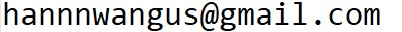

Han Wang
 |
Postsdoctoral fellow |
Contact
Address: School of Mathematics, University of Edinburgh, James Clerk Maxwell Building, Peter Guthrie Tait Road, Edinburgh EH9 3FD, UK
Email:  (Note there are three "n"s!)
Github： https://github.com/hannnwang
ORCID: https://orcid.org/0000-0002-5841-5474
Personal info
Here is my current CV .
I grew up in Shanghai, China, a city near the Yangtze River. My name in Chinese is 王含.
I attended the University of Science and Technology of China in Hefei for my undergraduate studies, where I developed an interest in physics. I then moved to New York, USA, where I earned a Ph.D. from the Courant Institute of Mathematical Sciences under the supervision of Oliver Bühler. There, I was exposed to beauties in geophysical fluid dynamics. A fateful event was learning about the power laws in the Gage-Nastrom spectrum and their (dis)connections with classical two-dimensional theories. My Ph.D. work developed analytical methods to help us gain dynamical insights from in-situ observational data. My journey continued at the University of Toronto, where I spent 1.5 years working with Nicolas Grisouard, mainly exploring applications of deep learning algorithms to help disentangle balanced and unbalanced flows. In April 2022, I began my second postdoc at the University of Edinburgh, working with Jacques Vanneste and (remotely) with William R. Young on the interactions between deep-water surface gravity waves and balanced flows.
During my spare time, I like learning about nature. Here is my profile on my favorite social network.